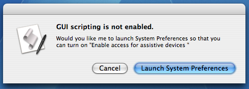

GUIScriptingChecker is an AppleScript module to check availability of "GUI Scripting".
To enable "GUI Scripting", the status of access for assitive devices in System Preferences must be ON. But default status is OFF. Therefore you should check availability of "GUI Scriting" at the beginning of the script which depends on "GUI Scripting".
"GUIScriptingChecker" take on boring routine task, and display the following dialog if "GUI Scripting" is not enabled.

If a user pushes "Enable GUI Scripting" button, GUIScriptingChecker try to enable "GUI Scripting". If "GUI Scripting" is enabled through authorization process, a script can contiue to work.